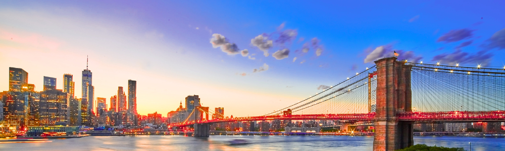

Destination New York City
New York City isn't just a place; it's a living, breathing marvel of ambition and possibility, beckoning with a unique energy you can feel the second you step onto its streets. Serving as a constant runway of cutting-edge fashion found from SoHo boutiques to Fifth Avenue’s flagship stores. Beyond the latest trends, the city's stunning collection of landmarks—from the towering Empire State Building to the historic Brooklyn Bridge—create an unforgettable backdrop for your adventure. Fueling this non-stop energy is an unparalleled food scene, offering everything from iconic dollar-slice pizza and food carts to Michelin-starred dining in every imaginable neighborhood. No trip is complete without experiencing the magic of its world-famous theater, where the bright lights of Broadway illuminate both timeless classics and new productions nightly. Finally, when the curtain falls, the city keeps its promise with legendary nightlife, offering vibrant bars, hidden speakeasies, and music venues that pulse until dawn. This is a city that invites you to chase its endless possibilities.
Fashion
New York City is the ultimate, unapologetic style authority, where every sidewalk is a runway and every person is a curator of their own look. Forget fast fashion; this city is a thrilling treasure hunt, showcasing everything from the edgy, emerging labels of the Lower East Side to the historic, high-end boutiques along Madison Avenue. Here, your outfit isn't just clothing—it's a statement, reflecting the electric and constantly evolving energy of the metropolis. Prepare to be instantly inspired and ready to create your boldest, most fabulous self!
"Style is knowing who you are, what you want to say, and not giving a damn." — Orson Welles

Landmarks
Prepare to crane your neck and fill your camera roll, because the New York City landmarks are an astonishing, iconic spectacle that tell the epic story of American ambition! Nowhere else does history and sheer architectural genius fuse so seamlessly: marvel at the soaring Art Deco grace of the Chrysler Building’s stainless steel spire, glittering like a celestial hubcap, while standing on the triumphant stone arches of the Brooklyn Bridge. From the enduring symbol of freedom, the Statue of Liberty, watching over the harbor, to the celestial majesty of Grand Central Terminal's starry ceiling, these monumental sights are more than just photo opportunities—they are the unforgettable, steel-and-glass heart of a city that constantly reaches for the sky.
"New York is not a city, it's a world." – Truman Capote, Breakfast at Tiffany's

Food
Step right up and prepare your palate, because the New York City food scene is the world's most delicious, exhilarating, and relentless culinary carnival! This city is a 24/7 all-you-can-eat buffet of global ambition, where you can bite into a life-changing pastrami on rye sandwich from a century-old deli, then turn the corner for Michelin-starred Korean BBQ. Forget dinner reservations; in this metropolis, a perfect, foldable New York slice of pizza or the creamy white sauce of a late-night Halal cart are just as sacred as a tasting menu. It's a dazzling, diverse, and unapologetic feast that proves every corner of the world has a seat at the New York table.
"NYC: where the food is as iconic as the skyline" and "The greatest food city in the world is New York City, just in terms of depth and breadth, variety, size, infrastructure" by Andrew Zimmern
Theater
Forget just visiting a theater; in New York City, you're stepping into the epicenter of the global performing arts. This is where the magic happens: a thrilling, seven-block stretch of Broadway marquees flashing across Midtown, hosting spectacle-driven musicals that redefine theatrical possibility. But the real pulse of the city's drama extends further, into the vital, risk-taking productions of the Off-Broadway and Off-Off-Broadway circuit, where every night brings the potential to discover the next great American playwright. From the sheer, polished grandeur of a curtain-up on 42nd Street to the intimate, raw energy of an East Village stage, New York theater offers an unparalleled, heart-pounding cultural journey.
"Broadway has been very good to me. But then, I've been very good to broadway." — Ethel Merman
Nightlife
Forget sleeping—in New York City, the night is a second, even more exhilarating shift. The nightlife here is a constantly evolving, living map of culture and energy that defies definition. One moment you might be enjoying a bespoke, avant-garde drink in an intimate Lower East Side cocktail lair, and the next, you're experiencing a major international DJ set in a cavernous, art-focused Brooklyn club. From high-wattage rooftop terraces where you can toast the skyline to tiny, historic Greenwich Village jazz dens, NYC ensures that your evening journey is as rich, diverse, and ambitious as the city itself.
"If you can party here, you can party anywhere!" — The Knot
Photo Gallery
Add a paragraph and make a photo gallary
Video Gallery
Add a paragraph and make a video gallary
About
quick about me, maybe a